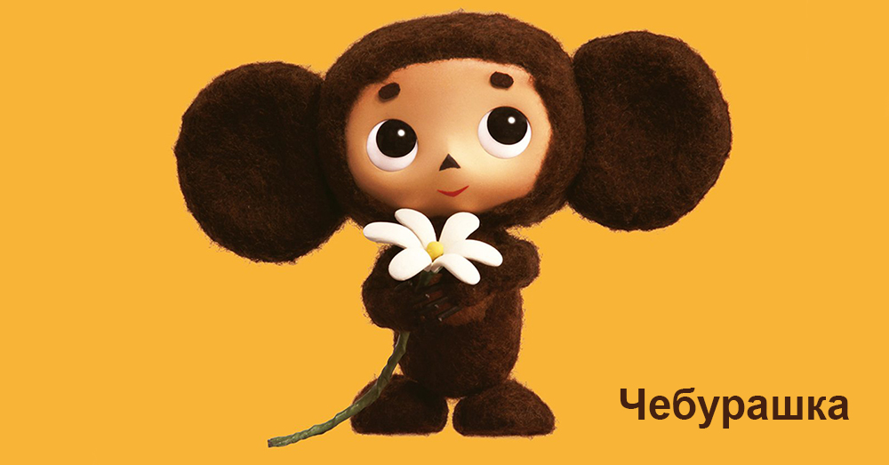

Кто такой Чебурашка, что за зверь?
Чебура́шка — персонаж книги Эдуарда Николаевича Успенского «Крокодил Гена и его друзья», экранизированной Романом Качановым. Внешне представляет собой существо с огромными ушами, большими глазами и коричневой шерстью, ходящее на задних лапах. Известный сегодня образ Чебурашки создан художником-мультипликатором Леонидом Шварцманом. Согласно предисловию к книге «Крокодил Гена и его друзья», Чебурашкой называлась бывшая у автора в детстве бракованная игрушка, изображавшая странного зверя: не то медвежонок, не то заяц с большими ушами. Глаза у него были большие и жёлтые, как у филина, голова круглая, заячья, а хвост коротенький и пушистый, такой, какой бывает обычно у маленьких медвежат. Родители мальчика утверждали, что это — неизвестный науке зверь, который живёт в жарких тропических лесах. Поэтому в основном тексте, героями которого выступают, как утверждается, [кем? ] детские игрушки Эдуарда Успенского, Чебурашка действительно является неизвестным тропическим зверьком, который забрался в ящик с апельсинами, уснул там и в результате вместе с ящиком попал в большой город. Директор магазина, в котором открыли ящик, назвал его «Чебурашкой» , так как объевшийся апельсинами зверёк постоянно падал (чебурахался) :